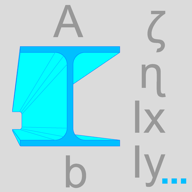

Apps
Aplicacions tècniques per a enginyeria i construcció.

Perfiles
Prontuari de perfils d'acer: pesos, dimensions i termes de secció de perfils europeus i americans, i dimensionador de bigues.

ArmaTec
Prontuari de formigó armat: barres d'acer, àrees i separacions, recobriments i ancoratges segons el Código Estructural, i calculadores per a l'obra.
Vull ser tester
ArmaTec encara està en proves. Si tens un mòbil Android, la pots provar abans que ningú:
- Entra al grup de testers (armatec@googlegroups.com) i prem «Unir-me al grup». Fes servir el mateix compte de Google que tens al mòbil.
- Des del mòbil, accepta la invitació a la prova.
- Instal·la ArmaTec des de Google Play. Si encara no la veus, espera uns minuts i torna-ho a provar.
- Explica'ns què en penses a appsavt@gmail.com. Gràcies per ajudar-nos!
Ara mateix Google està revisant la prova. Si algun enllaç encara no funciona, torna-ho a provar d'aquí a uns dies.
Contacte: appsavt@gmail.com
Apps
Aplicaciones técnicas para ingeniería y construcción.
Perfiles
Prontuario de perfiles de acero: pesos, dimensiones y términos de sección de perfiles europeos y americanos, y dimensionador de vigas.
ArmaTec
Prontuario de hormigón armado: barras de acero, áreas y separaciones, recubrimientos y anclajes según el Código Estructural, y calculadoras para la obra.
Quiero ser tester
ArmaTec todavía está en pruebas. Si tienes un móvil Android, puedes probarla antes que nadie:
- Entra en el grupo de testers (armatec@googlegroups.com) y pulsa «Unirme al grupo». Usa la misma cuenta de Google que tienes en el móvil.
- Desde el móvil, acepta la invitación a la prueba.
- Instala ArmaTec desde Google Play. Si todavía no la ves, espera unos minutos y vuelve a intentarlo.
- Cuéntanos qué te parece en appsavt@gmail.com. ¡Gracias por ayudarnos!
Ahora mismo Google está revisando la prueba. Si algún enlace todavía no funciona, vuelve a intentarlo dentro de unos días.
Contacto: appsavt@gmail.com
Apps
Technical apps for engineering and construction.
Perfiles
Steel section handbook: weights, dimensions and section properties of European and American profiles, plus a beam sizer.
ArmaTec
Reinforced concrete handbook: steel rebars, areas and spacing, concrete cover and anchorage according to the Spanish Structural Code, and calculators for site work.
I want to be a tester
ArmaTec is still in testing. If you have an Android phone, you can try it before anyone else:
- Go to the testers group (armatec@googlegroups.com) and tap “Join group”. Use the same Google account you have on your phone.
- On your phone, accept the testing invitation.
- Install ArmaTec from Google Play. If you don't see it yet, wait a few minutes and try again.
- Tell us what you think at appsavt@gmail.com. Thanks for helping!
Google is currently reviewing the test. If a link doesn't work yet, please try again in a few days.
Contact: appsavt@gmail.com
Apps
Applications techniques pour l'ingénierie et la construction.
Perfiles
Mémento des profilés en acier : poids, dimensions et caractéristiques de section des profilés européens et américains, et dimensionneur de poutres.
ArmaTec
Mémento du béton armé : barres d'acier, sections et espacements, enrobages et ancrages selon le Code structurel espagnol, et calculatrices pour le chantier. Disponible en catalan, espagnol et anglais.
Devenir testeur
ArmaTec est encore en phase de test. Si vous avez un téléphone Android, vous pouvez l'essayer avant tout le monde :
- Rejoignez le groupe de testeurs (armatec@googlegroups.com) avec « Rejoindre le groupe ». Utilisez le même compte Google que sur votre téléphone.
- Depuis votre téléphone, acceptez l'invitation au test.
- Installez ArmaTec depuis Google Play. Si elle n'apparaît pas encore, attendez quelques minutes et réessayez.
- Donnez-nous votre avis à appsavt@gmail.com. Merci de votre aide !
Google examine actuellement le test. Si un lien ne fonctionne pas encore, réessayez dans quelques jours.
Contact: appsavt@gmail.com
Apps
Technische Apps für Ingenieurwesen und Bauwesen.
Perfiles
Stahlprofil-Tabellenbuch: Gewichte, Abmessungen und Querschnittswerte europäischer und amerikanischer Profile sowie Trägerbemessung.
ArmaTec
Stahlbeton-Tabellenbuch: Bewehrungsstäbe, Querschnitte und Abstände, Betondeckung und Verankerung nach dem spanischen Tragwerkscode sowie Rechner für die Baustelle. Verfügbar auf Katalanisch, Spanisch und Englisch.
Tester werden
ArmaTec befindet sich noch in der Testphase. Wenn Sie ein Android-Handy haben, können Sie die App vorab ausprobieren:
- Treten Sie der Testergruppe (armatec@googlegroups.com) über „Gruppe beitreten“ bei. Verwenden Sie dasselbe Google-Konto wie auf Ihrem Handy.
- Nehmen Sie die Testeinladung auf Ihrem Handy an.
- Installieren Sie ArmaTec über Google Play. Wenn sie noch nicht erscheint, warten Sie ein paar Minuten und versuchen Sie es erneut.
- Schreiben Sie uns Ihre Meinung an appsavt@gmail.com. Danke für Ihre Hilfe!
Google prüft den Test gerade. Falls ein Link noch nicht funktioniert, versuchen Sie es in ein paar Tagen erneut.
Kontakt: appsavt@gmail.com
Apps
App tecniche per l'ingegneria e l'edilizia.
Perfiles
Prontuario dei profilati in acciaio: pesi, dimensioni e caratteristiche di sezione dei profilati europei e americani, e dimensionamento delle travi.
ArmaTec
Prontuario del calcestruzzo armato: barre d'acciaio, aree e interassi, copriferri e ancoraggi secondo il Codice strutturale spagnolo, e calcolatrici per il cantiere. Disponibile in catalano, spagnolo e inglese.
Voglio fare il tester
ArmaTec è ancora in fase di test. Se hai un telefono Android, puoi provarla prima di tutti:
- Entra nel gruppo dei tester (armatec@googlegroups.com) e tocca «Iscriviti al gruppo». Usa lo stesso account Google che hai sul telefono.
- Dal telefono, accetta l'invito al test.
- Installa ArmaTec da Google Play. Se non la vedi ancora, aspetta qualche minuto e riprova.
- Raccontaci cosa ne pensi a appsavt@gmail.com. Grazie per l'aiuto!
Google sta esaminando il test. Se un link non funziona ancora, riprova tra qualche giorno.
Contatti: appsavt@gmail.com